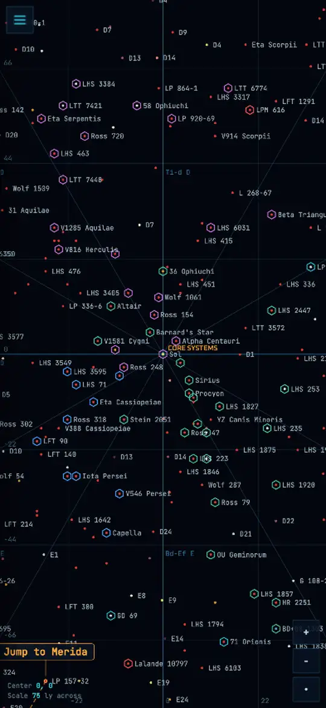
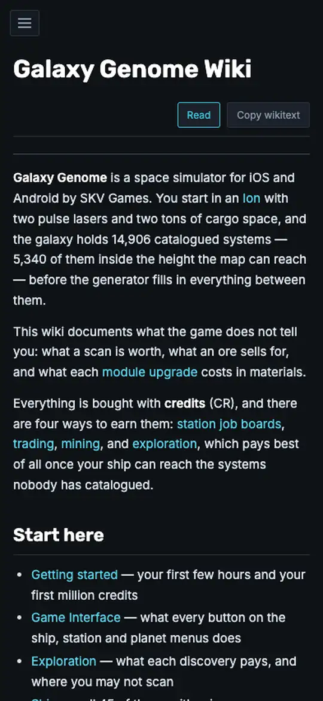

Map
Every catalogued system and the generated space between them, with routes, warp gates, ore and outfitting figures. Deep links open exactly what you are looking at.
Open the map
Wiki
What the game never tells you: what things pay, which planets yield which material, how the bar offers quests, ship and module cards, and how mods load.
Open the wiki
Quest Editor
Write side quests and add star systems on your phone, play them through before the game sees them, and download files ready to copy onto your device.
Open the editor